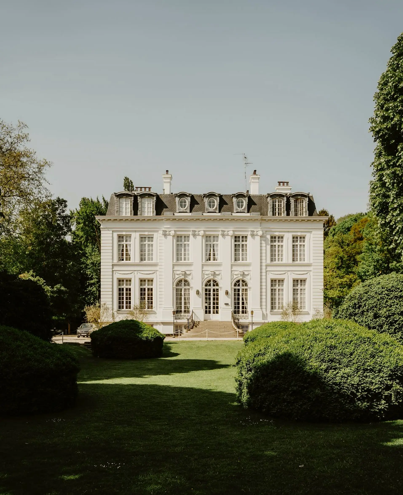

Georges
Saint-Léger (1844–1899) et
Amélie Longhaye (1847–1929)
Une bourgeoisie industrielle au cœur du Nord au XIXᵉ siècle
Le Nord industriel et la bourgeoisie lilloise
La seconde moitié du XIXᵉ siècle transforme profondément Lille et sa région. La révolution industrielle a fait du Nord de la France l’un des principaux bassins textiles d’Europe : filatures de lin, de coton et de laine se multiplient, attirant ouvriers et entrepreneurs dans un climat de prospérité et de compétition. Les familles bourgeoises, comme les Saint-Léger ou les Longhaye, tissent des alliances stratégiques, mêlant affaires, mariages et prestige social.
Entre 1848 et 1870, la France connaît des bouleversements politiques : la Révolution de 1848, le Second Empire de Napoléon III, puis la guerre franco-prussienne et la chute du régime impérial. Ces événements façonnent la vie de la bourgeoisie lilloise : prudence, travail acharné et respectabilité deviennent essentiels.
Dans ce contexte, Lille voit ses quartiers centraux, boulevard de la Liberté et boulevard Vauban, se peupler d’hôtels particuliers où cohabitent proximité familiale et affichage social. Le père de Georges habite 15 boulevard de la Liberté, tandis que celui d’Amélie réside 6 boulevard Vauban, à peine 350 mètres plus loin.
Georges Saint-Léger : un homme discret et appliqué
Né en 1844, Georges est décrit par son fils André comme un homme à la fois doux et silencieux :
« Mon père Georges Saint-Léger était un homme un peu triste. Sans beaucoup de vie, mais d’un caractère doux et charmant, très distrait. Il vivait comme une machine… sa seule distraction était la lecture. »
Il dirige l’usine familiale située 32 rue des Tours à Lille, une filature fondée vers 1800. Georges représente cette génération d’industriels prudents, attachés à la continuité de l’entreprise et à la stabilité familiale, plutôt qu’aux éclats publics.
Il épouse Amélie Longhaye, issue d’une famille influente et philanthrope. André la décrit ainsi :
« Ma mère était très aimable et douce, mais d'un caractère un peu enfantin, elle aimait le luxe et ne parlait que d'elle. Elle était un peu ennuyeuse. Elle est morte à 82 ans. Ils habitaient une grande maison Louis XV au coin de la rue Royale et de la rue Léonard.
Le couple aura trois enfants : André (1870–1922), Pierre (1871–1897) et Marthe (1875–1966).
La famille Longhaye et la philanthropie
Le père d’Amélie, Auguste Longhaye, chevalier de la Légion d’Honneur, est un riche négociant et philanthrope : président des comités de secours aux soldats blessés, fondateur de la Caisse des Invalides du travail, il soutient également les jeunes filles exploitées dans les mines. Auguste épouse Virginie Van de Weghe le 12 mai 1845 et ils auront quatre filles : Madame Descamps, Madame Calary de la Mazières, Madame Georges Saint-Léger (Amélie) et Madame Allègre.
André se souvient :
« Le grand-père Longhaye avait une maison de commerce place de la Gare, il fit des affaires de fils et de lins qui furent très prospères, c’est à présent la Maison Descamps Longhaye. »
La mère d’Amélie, Virginie Van de Weghe, impose une certaine discipline sociale à la famille :
« C’était une femme autoritaire qui avait une immense maison 6 bd Vauban, il y avait de nombreux galons, elle passait son temps à recevoir, nous étions obligés d'y dîner deux fois par semaine et ne pouvions pas y manquer sans sa permission. Elle est morte vers 80 ans. »
Le château de Verlinghem
La famille possède le château de Verlinghem, surnommé Château Blanc, construit en 1852 par l’industriel De Viervoorde. Situé au cœur d’un parc à l’anglaise, il incarne le goût de la bourgeoisie industrielle pour le raffinement campagnard et la vie de villégiature, loin de l’agitation urbaine. André raconte :
« Nous avions une propriété très jolie qu'on habitait l'été, car on allait peu aux bains de mer. À cette époque c'était le château de Verlinghem. »
Le château sert de refuge familial, lieu de promenades, de lectures et de réunions estivales. C’est là que la famille perpétue ses habitudes et son éducation bourgeoise, dans un cadre qui reflète autant le prestige que la tranquillité.

L’hôtel Crépy Saint-Léger : symbole du prestige urbain
L’hôtel Crépy Saint-Léger, au 77 rue Royale à Lille, est un autre emblème de la famille. Construit initialement en 1874 par les Descamps, il deviendra par la suite le fruit de l’alliance entre Marthe Saint-Léger, fille de Georges et Lucien Crépy. Cet hôtel particulier symbolise l’ascension et le raffinement de la bourgeoisie industrielle lilloise de la fin du XIXᵉ siècle.
« Construit en 1874 par les Descamps, ils construisent un véritable château de pierre de taille en plein Lille : 1 400 m2, tout de plafonds vertigineux, de moulures ouvragées et de parquets nobles. Succédèrent les Crépy Saint-Léger puis ce sera la Banque de France au lendemain de la Grande Guerre.
L’hôtel illustre à la fois le prestige familial et la continuité sociale : il devient un lieu où le capital industriel et le capital financier se rejoignent, reliant l’héritage de Georges à la génération suivante.

Épilogue : fin d’une génération
Georges meurt prématurément en 1899, à 54 ans, laissant Amélie veuve. Elle survit jusqu’à 82 ans, entourée de ses enfants et de souvenirs d’une époque où l’industrie et la philanthropie guidaient les vies familiales.
La famille Saint-Léger, à travers le château de Verlinghem et l’hôtel Crépy Saint-Léger, incarne la bourgeoisie industrielle lilloise du XIXᵉ siècle : prudente, laborieuse, attachée à la famille et aux traditions, mais capable de grandeur et de raffinement.
← Retour à la liste des récits